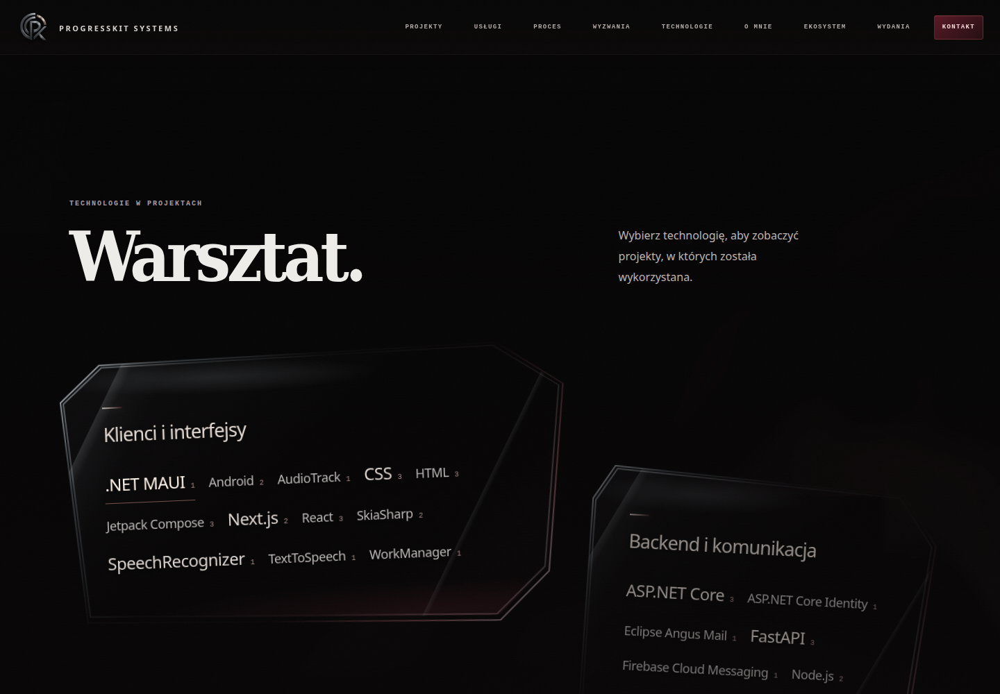
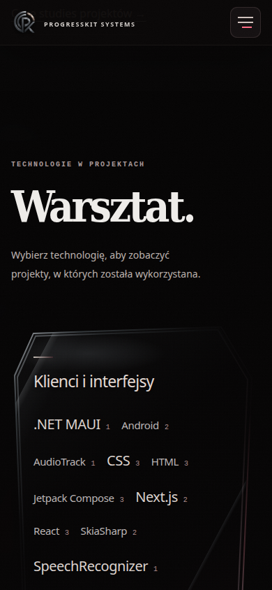

OWNER VISUAL APPROVAL: OPEN
Odśwież lokalny podgląd, żeby wczytał nowy kod. Poniższe materiały pochodzą z lokalnego Chrome; opóźnienie zewnętrznej ramki podglądu aplikacji nie jest zmierzone.
Pomiary lokalnej strony: Warsztat — reakcja kodu 7–13 ms; Core — pierwsza klatka po zdarzeniu 33–36 ms; zimny start Core 3,3–3,6 s.


Bez commita, pushu i publikacji. Film13s /25FPS; dane i układ zachowane.